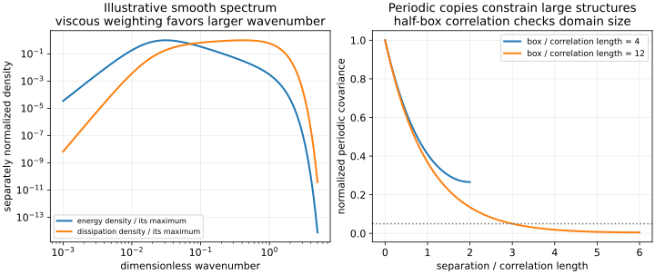

18. Scales, cascades and direct numerical simulation
Removing a turbulence model does not remove the need to justify a calculation. Direct numerical simulation replaces closure assumptions by a demanding resolution problem: the domain must admit the large structures, the discretization must represent the dissipative motions, and the observation interval must support the requested statistics. Scale estimates help design that calculation. They are conditional physical arguments, not certificates that a particular mesh or sampled mean is accurate.
Complete captions60–63 were read in numbered order. They move from Kolmogorov hypotheses to DNS resolution, numerics, domain size, startup and statistical sampling. The rewrite explicitly corrects the identification of an inertial range with irrotational flow, the identification of the Kolmogorov length with continuum breakdown, and a grid-count arithmetic slip. Numerical instability is distinguished from a prescribed physical perturbation. Unavailable source plots are discussed qualitatively without invented data.
18.1 What small-scale universality assumes L60 · 00:14
Let \(k=\mathbb E[u_i'u_i']/2\) be turbulent kinetic energy per mass, \(\nu>0\) the kinematic viscosity, and \(\epsilon=2\nu\mathbb E[s'_{ij}s'_{ij}]\) the physical mean viscous dissipation, with \(s'_{ij}=(\partial_j u_i'+\partial_i u_j')/2\). These definitions do not require isotropy. Introduce a characteristic turbulent speed \(u>0\), a large correlation length \(L>0\), and \(Re_L=uL/\nu\). The speed here describes fluctuations; replacing it by pipe bulk speed changes the Reynolds number and needs a separate relation. Under isotropy, a one-component rms speed is \(u=\sqrt{2k/3}\). Other speed conventions produce other coefficients.
The local-isotropy hypothesis concerns statistics of sufficiently small-scale velocity increments, away from boundaries and other relevant singular regions, when the large-scale Reynolds number is sufficiently high. It does not assert equal streamwise and normal variance throughout a channel. Increments are differences \(u_i(\boldsymbol x+\boldsymbol r,t)-u_i(\boldsymbol x,t)\); subtracting velocities removes a uniform translation. Isotropy requires their joint distribution to transform appropriately under rotations, a much stronger condition than one observed scalar slope.
Kolmogorov's 1941 paper, read in its1991 translation, states small-scale similarity hypotheses in terms of viscosity and mean dissipation, with an intermediate-scale hypothesis losing leading viscosity dependence. It distinguishes local increment isotropy from isotropy of the full velocity. These are hypotheses with a stated range of applicability, not consequences of dimensional analysis alone. Dimensional analysis can determine a form once the relevant variables have been chosen; it cannot prove that the omitted wall distance, shear or history is unimportant.
The lecture challenges isotropy using unequal wall-flow component budgets. Those budgets establish directional differences at a spatial location. A curve plotted against wall distance is not itself a decomposition by eddy size or wavenumber. Unequal component dissipation near a wall is relevant evidence about that region, but a scale-resolved anisotropy claim requires scale-resolved measurements. Similarly, nonzero local production and dissipation do not show that a particular identifiable eddy both produced and dissipated all its own energy. Physical-space transport and transfer across scales answer different questions.
18.2 Deriving length, time and velocity microscales L60 · 15:00
Assume that only \(\nu\), with dimensions \(\mathrm{L^2T^{-1}}\), and \(\epsilon\), with dimensions \(\mathrm{L^2T^{-3}}\), set the characteristic dissipative scales. To construct a length, set \(\eta=\nu^a\epsilon^b\). The length and time exponents require \(2a+2b=1\) and \(-a-3b=0\). Thus \(b=-1/4\), \(a=3/4\). Repeating for time and velocity gives
These definitions satisfy \(\eta/u_\eta=\tau_\eta\) and \(u_\eta\eta/\nu=1\). The latter expresses comparable viscous and inertial dimensional effects at this characteristic scale. It does not imply every instantaneous small structure has this size, nor that all motion at smaller wavelengths vanishes. With \(\nu=1.5\times10^{-5}\,\mathrm{m^2/s}\) and \(\epsilon=0.5\,\mathrm{m^2/s^3}\), the executed calculation gives \(\eta=0.286633\,\mathrm{mm}\), \(\tau_\eta=5.477226\,\mathrm{ms}\), and \(u_\eta=0.05233176\,\mathrm{m/s}\).
The continuum approximation has a different test: a molecular scale such as the mean free path must be sufficiently small relative to a relevant macroscopic gradient length. No mean free path appears in(18.1). Thus \(\eta\) is not the length at which continuum mechanics automatically breaks down. It is a viscous turbulence scale within that continuum description. Spatially variable or intermittent dissipation also gives variable local estimates; a scale made from mean dissipation need not bound every local gradient.
For integral-scale estimates, define the dimensionless coefficient \(C_\epsilon=\epsilon L/u^3\), rather than silently setting it to one. Direct substitution into(18.1) gives
These equalities follow from the definitions. Treating \(C_\epsilon\) as a roughly Reynolds-independent coefficient is an additional approximation appropriate to some high-Reynolds-number regimes. The length \(u^3/\epsilon=L/C_\epsilon\) is a dimensional dissipation length, not an identity for a measured integral correlation length or a geometric gap. A discrepancy between an estimated \(\eta\) and a DNS-derived value can reflect this coefficient, the speed convention, inhomogeneity or measurement error. There is no general theorem that the first estimate must always be conservative.
18.3 A cascade is a transfer statement L61 · 00:14
An inertial range lies between the forcing or energy-containing lengths and the dissipative range, with \(\eta\ll r\ll L\) when sufficient scale separation exists. “Inertial” describes the leading transfer balance; it does not mean irrotational. Vorticity and vortex stretching can remain central. The cascade picture organizes net transfer from larger to smaller scales in ordinary three-dimensional turbulence, while nonlinear interactions can also transfer energy in the opposite direction at individual locations or between particular modes. A net forward transfer does not forbid backscatter.
For homogeneous turbulence, let \(E(\kappa,t)\) be a shell-integrated energy spectrum with wavenumber \(\kappa\) in \(\mathrm{m^{-1}}\), normalized so \(k=\int_0^\infty E\,d\kappa\). It has dimensions \(\mathrm{m^3/s^2}\). In a homogeneous incompressible setting, integration by parts makes mean gradient-squared dissipation equal to physical dissipation, yielding \(\epsilon=2\nu\int_0^\infty\kappa^2E\,d\kappa\). These normalization statements must accompany a plotted spectrum: a one-dimensional component spectrum and a shell-integrated spectrum are different objects.
Write its schematic budget as \(\partial_tE=T+F-2\nu\kappa^2E\), where \(T\) is conservative nonlinear transfer and \(F\) is energy input. With \(\Pi(K)=-\int_0^K T(\kappa)\,d\kappa\), positive \(\Pi\) represents loss of energy from modes below \(K\) to larger wavenumbers. Integrating gives
In statistically stationary forced turbulence, above the forcing band and below significant cumulative viscous loss, this balance permits an approximately constant flux equal to input and total dissipation. For freely decaying turbulence, the time derivative is present; for inhomogeneous flows, physical-space transport contributes. Equality of inertial-range flux and mean dissipation therefore needs a balance argument, rather than an assertion that every intermediate structure is instantaneously in equilibrium.
If an inertial-range spectrum depends only on \(\epsilon\) and \(\kappa\), write \(E=C_K\epsilon^a\kappa^b\). Matching time gives \(a=2/3\); matching length gives \(b=-5/3\). The result \(E=C_K\epsilon^{2/3}\kappa^{-5/3}\) is conditional on that variable selection and spectral definition. A short apparent straight segment is not proof of all the assumptions; failure to see it can reflect insufficient separation, anisotropy, non-equilibrium, inadequate resolution or a different physical regime. The corresponding dimensional velocity difference is of order \((\epsilon r)^{1/3}\), which matches \(u_\eta\) at \(r=\eta\).
Kolmogorov's1962 refinement introduces spatially averaged fluctuating dissipation into similarity arguments and discusses a lognormal hypothesis. This is internal dissipation intermittency; the alternating turbulent and non-turbulent regions at an external jet boundary are a different use of “intermittency.” Neither a mean scale nor a single spectrum captures every distributional feature. Two-dimensional inverse-cascade examples concern a different dynamical setting and conservation constraints; they do not by themselves refute a hypothesis expressly directed at three-dimensional conditions.

Viscous loss is positive at every nonzero wavenumber with nonzero spectral energy; it is usually weighted much more strongly at large wavenumber. There is no sharp universal cutoff at \(\eta\). A dissipation-spectrum peak near a multiple of \(\eta\) would locate a peak in a density, not establish that a mesh of that spacing resolves the spectrum's tail or its moments. Density per unit wavenumber and density per logarithmic interval also have different peaks.
18.4 What direct simulation resolves, and what it still assumes L62 · 00:15
DNS of a specified turbulent flow integrates its instantaneous governing equations without a turbulence closure, while resolving the dynamically relevant spatial and temporal scales to adequate accuracy for stated observables. For ordinary three-dimensional turbulence this requires the three-dimensional unsteady problem. A two-dimensional Navier–Stokes calculation can be direct for a deliberately two-dimensional mathematical system, but does not become a simulation of a three-dimensional turbulent channel by reproducing its mean profile. A steady solution also cannot represent its unsteady fluctuations.
The absence of a turbulence closure is not absence of physical assumptions. Constant density, Newtonian stress, incompressibility, constitutive properties and imposed boundary data remain modeling choices. Reacting or multiphase DNS may require species, chemistry, interface and thermodynamic descriptions beyond mass and momentum conservation. The three conservation laws alone do not specify every such problem. Here we restrict attention to incompressible, constant-property single-phase flow. The word DNS is conventionally especially useful when distinguishing turbulent direct calculation from RANS or LES; solving a laminar test exactly enough remains valuable verification regardless of naming.
Suppose a cube of side \(L\) needs spacing of order \(\eta\). Ignoring constants and boundary stretching, \(n\sim L/\eta\) points in each direction gives \(N=n^3\sim C_\epsilon^{3/4}Re_L^{9/4}\). At \(C_\epsilon=1\), \(Re_L=10^6\), \(n\approx31\,623\) and \(N\approx3.1623\times10^{13}\), not \(10^{17}\). Four double-precision fields alone occupy \(32N\approx1.0119\times10^{15}\) bytes, before pressure-solver storage, intermediates, halos and saved history. This is an estimate for the stated cube, not a universal wall-flow cost law.
The recording's illustrative unit speed, unit length and viscosity \(10^{-6}\,\mathrm{m^2/s}\) are algebraically consistent with \(Re=10^6\); that viscosity should not be silently identified with the stipulated air value \(1.5\times10^{-5}\) used in our numerical examples. The latter gives \(Re=66\,666.7\). State material properties and temperature when using actual fluid values. Hardware limits quoted in a recording are historical context, not enduring mathematical limits.
Time and storage compound the cost. Over one turnover time \(L/u\), a step limited by \(\tau_\eta\) suggests order \(Re_L^{1/2}\) steps at fixed \(C_\epsilon\), so the grid-point-step estimate scales as \(Re_L^{11/4}\). An explicit advective CFL bound based on a velocity of order \(u\) and spacing \(\eta\) can instead require order \(Re_L^{3/4}\) steps and work scaling like \(Re_L^3\). Solver complexity, mean sweeping, geometry and desired statistical duration alter these estimates. Distributed domain decomposition and message passing are common responses to memory and communication requirements; no particular parallel library is a mathematical requirement of DNS.
18.5 Resolution includes the discrete equations L62 · 13:20
A posteriori estimates of \(\Delta_x/\eta,\Delta_y/\eta,\Delta_z/\eta\), their maximum, and directional wall spacings \(\Delta_i^+=u_\tau\Delta_i/\nu\) are useful diagnostics. A single universal bound cannot express discretization order, resolved spectral content, time integration and the observable's sensitivity. Wall-normal spacing is usually far smaller than the elongated tangential spacing; the first-point \(y^+\) is not a complete three-direction resolution report.
The source also discusses the geometric diagnostic \(\Delta_g/(\pi\eta)\), where \(\Delta_g=(\Delta_x\Delta_y\Delta_z)^{1/3}\), attributed there to Grötzbach. We use it only as the lecture's diagnostic, without claiming an inspected derivation or universal sufficiency. If spacings are \((8\eta,0.5\eta,0.5\eta)\), this ratio is0.4010 although one direction is eight times \(\eta\). The geometric average hides anisotropy. Moreover, an underresolved field can underestimate \(\epsilon\), inflate its inferred \(\eta\), and misleadingly improve the ratio. Underestimating dissipation by16 doubles the inferred scale.
To see why a mesh ratio alone is insufficient, consider the exact diffusion equation \(\partial_t f=\nu_d\partial_{xx}f\) on a \(2\pi\)-periodic reference interval, with \(f(x,0)=\sin(mx)\), integer \(m=6\) and reference diffusivity \(\nu_d=0.01\). Its amplitude is \(e^{-\nu_d m^2t}\). A centered second-order Laplacian on spacing \(h\) replaces \(m^2\) by \(\widetilde m^2=4\sin^2(mh/2)/h^2\). Integrating that discrete mode exactly in time isolates spatial error: at \(t=1\), amplitudes for32,64,128points are0.72597341,0.70489227,0.69948902, against the exact0.69767633. The last error ratio is3.98077, approaching the expected factor4. A wavelength can fit on a mesh yet have a substantially incorrect decay rate.
For linear advection, a centered derivative has symbol \(i\sin(mh)/h\), so it changes phase speed even when its spatial operator is nondissipative. Pairing it with an unstable time integrator does not create trustworthy turbulent fluctuations. Low artificial dissipation, acceptable dispersion, discrete incompressibility, energy behavior and time-step stability must be considered together. Morinishi and colleagues'1998 abstract explicitly treats simultaneous discrete mass, momentum and kinetic-energy conservation; even higher-order formulas need compatible operators. The citation supports that bounded point, not an uninspected implementation.
Finite-volume conservation requires one common flux on a shared face, applied with opposite signs; the method name does not make independently inconsistent face calculations cancel. Incompressible pressure projection must satisfy its discrete constraint and boundary compatibility, with a gauge where needed. Pressure cost depends on the solver and domain. Pressure Neumann and velocity Dirichlet data are common in particular wall settings, not universal boundary conditions for every inflow, outflow or periodic problem. A small physical cell size does not erase any of these requirements.
18.6 The box and the initial field are part of the experiment L63 · 00:15
In a statistically homogeneous streamwise direction, define the normalized two-point correlation \(C_{ii}(r;y)=\mathbb E[u_i'(x,y,z,t)u_i'(x+r,y,z,t)]/R_{ii}(y)\), when the denominator is positive. It has value1 at zero separation. In an inhomogeneous direction, a correlation coefficient may instead need the product of the two local standard deviations. This distinction matters if one carries the source's single-point normalization into a direction where variances change.
For a periodic box of length \(B\), correlations are periodic and separations beyond \(B/2\) duplicate smaller separations. A structure comparable to \(B\) interacts with its periodic copies. Looking for small correlations near half-box separation, for all relevant velocity components and homogeneous directions, is a useful warning test. It is not a proof that a particular eddy has a literal length equal to the first zero crossing. Oscillatory correlations can cross zero early; long weak tails can matter to integral lengths. Repeat the calculation in a larger domain and compare the target statistics, spectra and correlations. Refining a fixed small box resolves the wrong periodic problem more accurately.
Our analytic example uses a periodized exponential covariance \(C_B(r)=[e^{-r/\ell_c}+e^{-(B-r)/\ell_c}]/[1+e^{-B/\ell_c}]\) for \(0\le r\le B\), where \(\ell_c>0\) is a correlation length. It is the normalized periodic summation of an exponential covariance. At half-box separation it equals \(1/\cosh[B/(2\ell_c)]\). For \(B=4\ell_c\) it remains0.2658; for \(B=12\ell_c\) it falls to0.004957. These are constructed covariances, not measured channel data or a universal recommendation to use12gap widths. The channel gap and streamwise correlation length are distinct.
Starting turbulence is another separate issue. The nonlinear term does not guarantee that every small disturbance grows or that every high-Reynolds-number initial state reaches the same long-time regime. A physically admissible deterministic perturbation on a periodic reference plane is \((u',v',w')=a(\sin x\cos y,-\cos x\sin y,0)\), whose divergence is exactly zero. In a wall domain the perturbation must also satisfy wall conditions. Random values assigned independently to velocity components generally violate incompressibility and must be projected or generated by a compatible construction. Match intended correlations and amplitude as well as a nonzero variance.
The lecture describes temporarily reducing viscosity until strong disturbances develop, then restoring the target value. Controlled continuation in Reynolds number can supply an initial condition, but a nearly crashing, underresolved high-Re field is not validated turbulence. After resetting, restore the target equations and parameters, obtain adequate resolution, discard contaminated transients and test sustained statistics. Laminarization may be a legitimate physical outcome for a particular amplitude or parameter regime. Initial-condition dependence and multiple attractors can also occur in RANS; averaging does not establish uniqueness.
Synthetic divergence-free fields or a precursor calculation provide alternatives. A precursor supplies an evolving inflow, rather than merely one startup snapshot. Its geometry, mean profile, stresses, length/time correlations, flux compatibility and boundary treatment must fit the downstream problem. Synthetic covariance alone does not determine all those properties. The displayed source startup examples are retained as reported qualitative cases; no colored image has been promoted here to a quantitative turbulence or resolution test.
18.7 A converged time step is not a converged statistic L63 · 19:29
After startup, inspect whether the intended statistics are plausibly stationary over the observation interval. Running means, multiple blocks, energy input/loss and drift of important observables help distinguish transient relaxation, sampling variation and slow regime changes. Statistical stationarity does not mean an unchanging instantaneous velocity field. Nor is it established by agreement of two nested sample means, which share almost all their data.
For a stationary scalar record \(X_j\), sampled at interval \(\delta t_s\), with variance \(\sigma^2\) and lag correlation \(\rho_m\), the mean of \(n\) samples has exact variance
This follows by summing every covariance \(\operatorname{Cov}(X_i,X_j)\) in the variance of \(n^{-1}\sum X_j\); each positive lag occurs \(2(n-m)\) times. For unit variance and \(\rho_m=0.99^m\),1000samples have effective count only5.5803 and standard deviation of the mean0.42332. Dense correlated sampling can still be used if its uncertainty is accounted for; it is not necessary to throw away every correlated sample. Thinning can reduce storage but does not manufacture information beyond the observation duration.
For continuous correlation \(e^{-|t|/t_c}\), waiting \(2.9957t_c\) reduces pair correlation below0.05. The threshold is a design choice, not exact independence. Sampling must also be fast enough for any spectra or transient events one intends to resolve; choosing only decorrelated samples can destroy high-frequency information. Mean convergence, spectral sampling and output-storage design are related but distinct tasks.
The recording describes large structures changing phase or orientation over hundreds of turnover times. If the process explores several states, an unconditional long-time mean need not resemble any instantaneous state. That is a property of averaging, not automatically an invalid mean. Report state-conditioned statistics and occupancy when the distinction matters; uncertainty is difficult if switching is slower than the observation record. DNS data can also test a measurement or image-processing pipeline by providing controlled input fields. Such a test must specify its synthetic measurement model; a numerical reference remains subject to its own discretization and sampling uncertainty.
18.8 Executed design checks
The standard-library program below reproduces the scale, arithmetic, anisotropic-grid, spatial-error, periodic-covariance and sampling values above. It includes no turbulence solver, external data download or model calibration. Its exact Fourier-mode time evolution isolates the spatial Laplacian error; it is not a demonstration that a three-dimensional DNS has passed resolution tests.
"""Restricted scale, mode-resolution, domain and sampling checks; no turbulent DNS."""
from math import cos, exp, log, pi, sin, sqrt
nu, eps, speed, length = 1.5e-5, 0.5, 1.0, 0.2
eta = (nu**3 / eps)**0.25
tau = sqrt(nu / eps)
ueta = (nu * eps)**0.25
re = speed * length / nu
ce = eps * length / speed**3
print(f"Kolmogorov length m, time s, speed m/s: {eta:.9f}, {tau:.9f}, {ueta:.9f}")
print(f"microscale Reynolds number: {ueta * eta / nu:.8f}")
print(f"integral Reynolds number and dissipation coefficient: {re:.8f}, {ce:.8f}")
assert abs(eta / length - ce**(-0.25) * re**(-0.75)) < 1e-15
for reynolds in (1e4, 1e6):
n = reynolds**0.75
print(f"Re={reynolds:.0f}: points per direction={n:.4f}, total={n**3:.8e}, four-field bytes={32*n**3:.8e}")
print(f"unit speed/unit length with stipulated air viscosity: Re={1/nu:.8f}")
dx, dy, dz = 8*eta, .5*eta, .5*eta
print(f"anisotropic grid geometric criterion and maximum ratio: {(dx*dy*dz)**(1/3)/(pi*eta):.8f}, {max(dx,dy,dz)/eta:.8f}")
print(f"eta inflation if epsilon is underestimated by factor16: {16**0.25:.8f}")
# Exact heat-equation Fourier mode versus a centered spatial Laplacian.
viscosity, wave, time = .01, 6, 1.0
exact = exp(-viscosity * wave**2 * time)
errors = []
for n in (32, 64, 128):
h = 2*pi/n
discrete_wave_squared = 4*sin(wave*h/2)**2/h**2
semi_discrete = exp(-viscosity*discrete_wave_squared*time)
errors.append(abs(semi_discrete-exact))
print(f"diffusing mode N={n}: amplitude={semi_discrete:.8f}, error={errors[-1]:.8e}")
print(f"last spatial refinement ratio: {errors[-2]/errors[-1]:.8f}")
assert 3.9 < errors[-2]/errors[-1] < 4.1
# Periodized exponential covariance: normalized and positive definite.
def periodic_corr(separation, box, corr_length):
return (exp(-separation/corr_length) + exp(-(box-separation)/corr_length))/(1+exp(-box/corr_length))
for box in (4.0, 12.0):
print(f"periodic covariance box/correlation length={box:.0f}: half-box correlation={periodic_corr(box/2,box,1):.8f}")
# Exact variance of the average for stationary unit-variance AR(1) samples.
n, rho = 1000, .99
factor = 1 + 2*sum((1-j/n)*rho**j for j in range(1,n))
print(f"1000 correlated samples: effective count={n/factor:.8f}, mean standard deviation={sqrt(factor/n):.8f}")
print(f"exponential correlation below .05 requires lag/tc={-log(.05):.8f}")
# A prescribed divergence-free periodic perturbation, not grid noise.
x, y, amplitude = .4, .7, .1
du_dx = amplitude*cos(x)*cos(y)
dv_dy = -amplitude*cos(x)*cos(y)
print(f"analytic startup perturbation divergence: {du_dx+dv_dy:.3e}")
Kolmogorov length m, time s, speed m/s: 0.000286633, 0.005477226, 0.052331757 microscale Reynolds number: 1.00000000 integral Reynolds number and dissipation coefficient: 13333.33333333, 0.10000000 Re=10000: points per direction=1000.0000, total=1.00000000e+09, four-field bytes=3.20000000e+10 Re=1000000: points per direction=31622.7766, total=3.16227766e+13, four-field bytes=1.01192885e+15 unit speed/unit length with stipulated air viscosity: Re=66666.66666667 anisotropic grid geometric criterion and maximum ratio: 0.40104533, 8.00000000 eta inflation if epsilon is underestimated by factor16: 2.00000000 diffusing mode N=32: amplitude=0.72597341, error=2.82970797e-02 diffusing mode N=64: amplitude=0.70489227, error=7.21593964e-03 diffusing mode N=128: amplitude=0.69948902, error=1.81269816e-03 last spatial refinement ratio: 3.98077286 periodic covariance box/correlation length=4: half-box correlation=0.26580223 periodic covariance box/correlation length=12: half-box correlation=0.00495747 1000 correlated samples: effective count=5.58033052, mean standard deviation=0.42332122 exponential correlation below .05 requires lag/tc=2.99573227 analytic startup perturbation divergence: 0.000e+00
For the recurring channel design, this calculation changes the next decision: specify the turbulent speed and length convention before budgeting the grid, inspect every directional spacing, enlarge the periodic directions independently of mesh refinement, and allocate sufficient physical observation time. A RANS model comparison using DNS then inherits uncertainty from both the constitutive approximation and the reference calculation. Agreement with a reference's uncertain mean is useful evidence only within that scope.
18.9 Exercises with complete solutions
1. Derive all microscale exponents and check their dimensions.
For a monomial \(\nu^a\epsilon^b\), dimensions are \(\mathrm{L}^{2a+2b}\mathrm{T}^{-a-3b}\). A time requires \(a+b=0\), \(-a-3b=1\), hence \(a=1/2,b=-1/2\). A velocity requires \(a+b=1/2\), \(-a-3b=-1\), giving \(a=b=1/4\). The length calculation gives \(a=3/4,b=-1/4\). Therefore \(\eta/\tau_\eta=\nu^{1/4}\epsilon^{1/4}=u_\eta\) and \(\eta u_\eta/\nu=1\). No molecular mean-free-path conclusion follows because no molecular length was supplied.
2. Retain the integral coefficient. Does a bulk Reynolds number determine eta?
Substitute \(\epsilon=C_\epsilon u^3/L\) into \(\eta/L=(\nu^3/\epsilon L^4)^{1/4}\) to obtain \(C_\epsilon^{-1/4}(\nu/uL)^{3/4}\). The other two ratios follow by the same substitution, yielding(18.2). With the program's \(u=1,L=0.2,\epsilon=0.5\), \(C_\epsilon=0.1\) and \(Re_L=13333.33\). Replacing that coefficient by1 underestimates eta by \(10^{1/4}=1.77828\). A bulk Reynolds number alone supplies neither turbulent fluctuation speed nor correlation length nor dissipation, so it does not uniquely determine eta.
3. Derive the energy-spectrum slope and explain its dissipation weighting.
For \(E=\epsilon^a\kappa^b\), match \(\mathrm{L^3T^{-2}}\): \(-3a=-2\) and \(2a-b=3\), so \(a=2/3,b=-5/3\). This assumes only those dimensional variables in an inertial range. Multiplying by \(2\nu\kappa^2\) gives a local dissipation-density factor proportional to \(\kappa^{1/3}\) within that idealized range. The power law cannot continue unchanged to infinite wavenumber, since its dissipation integral would diverge. A viscous-range departure is required; a spectral peak does not define a sharp maximum wavenumber.
4. Repair the grid count and give two time-cost estimates.
At \(Re=10^6,C_\epsilon=1\), \(n=10^{4.5}=31622.7766\), \(N=n^3=10^{13.5}=3.16227766\times10^{13}\). Four eight-byte fields need \(32N=1.01192885\times10^{15}\)bytes. Turnover duration divided by tau scales like \(Re^{1/2}\), giving \(N\)times steps proportional to \(Re^{11/4}\). An explicit advective step of order eta/u instead requires \(Re^{3/4}\)steps and work \(Re^3\). These assume fixed geometry, coefficient and per-point cost, omit solver/storage overhead, and say nothing universal about all wall-bounded DNS.
5. Can a favorable geometric grid ratio be misleading twice?
For \((8,0.5,0.5)\eta\), \(\Delta_g=2^{1/3}\eta\), hence \(\Delta_g/(\pi\eta)=0.401045\), while the largest directional ratio is8. The first failure is averaging away directional underresolution. If the inferred epsilon is too small by16, \(\eta_{\rm inferred}=(16\nu^3/\epsilon_{\rm true})^{1/4}=2\eta_{\rm true}\), so every displayed ratio becomes artificially half as large. Use directional evidence and a refined dissipation estimate rather than interpreting one scalar diagnostic as proof.
6. Explain the observed factor4 in Fourier-mode error.
Expand \(\sin(mh/2)\): \(\widetilde m^2=m^2-m^4h^2/12+O(h^4)\). Therefore the centered operator underestimates the decay rate, and \(e^{-\nu_d\widetilde m^2t}-e^{-\nu_dm^2t}=e^{-\nu_dm^2t}\nu_dm^4t h^2/12+O(h^4)\). Halving h quarters the leading error, consistent with3.98077. Exact time integration in the test removes temporal error; a practical time integrator introduces another convergence requirement. Small geometric cells with an unsuitable discrete symbol can still yield poor gradients or losses.
7. Quantify the periodic-domain requirement for the constructed covariance.
At r=B/2, the covariance is \(2e^{-B/(2\ell_c)}/[1+e^{-B/\ell_c}]=1/\cosh[B/(2\ell_c)]\). Requiring this particular model value below0.05 gives \(\cosh[B/(2\ell_c)]>20\), hence \(B/\ell_c>2\operatorname{arcosh}(20)\approx7.3765\). This is a result for the constructed exponential family, not a general minimum DNS box length. Real correlations can oscillate and have several lengths; actual domain enlargement and observable comparison remain necessary.
8. Derive the sampling variance and distinguish dense output from independent information.
Expanding variance of the mean gives \(n^{-2}\sum_{i,j}\sigma^2\rho_{|i-j|}\). The diagonal contributes \(n\sigma^2\); each lag m contributes \(2(n-m)\sigma^2\rho_m\), yielding(18.4). Define effective count by \(\operatorname{Var}(\overline X_n)=\sigma^2/n_{\rm eff}\). The executed finite sum gives5.58033 for n1000,rho0.99. With exponential correlation, \(\rho(\Delta t)<0.05\) requires \(\Delta t/t_c>\log20=2.995732\). Saving more frequent samples can resolve temporal detail and estimate correlation; it does not reduce the mean's uncertainty as if every output were independent. Slow state switching can require an entirely longer observation window.
A direct calculation becomes a useful reference through separate evidence about equations, scales, discrete operators, domain and statistics. The next chapter retains resolved unsteady motion while deliberately filtering part of its spatial content; the resulting unresolved stress will make closure reappear in a different form.